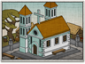

Requires
- Buildings:

- Arts:

- Religions:

Enables
- Buildings: 
Basic Building Statistics (can be modified by difficulty level, arts, skills, traits and retainers)
- Cost: 1250
- +1 happiness for the Christian population
- Increases siege length by 1 seasons
- +2% to town growth from all buildings
- Spreads Christianity to neighbouring provinces (+2 religious zeal)
- Converts the populace to Christianity (+6 religious zeal)
- +2% to the replenishment rate in this province
- Enables recruitment of Rank 1 missionaries
Clan Effects
- Improves the rate at which chi arts are mastered: +5%
- Each Christian chain building enables you to sustain one additional missionary (to a maximum of 5)
Description
With the arrival of western weapons comes the experience of western medicine.
A hospital will aid the conversion of the Japanese to Christianity, also increasing unit replenishment, economic growth and the happiness of the Christian populace. It will improve the rate at which the arts are mastered and allow a besieged army in the same castle town to hold out longer. The Society of Jesus, commonly called the Jesuits, was founded in 1534. Taking vows of poverty and celibacy, and with a fanatical devotion to the Catholic faith, the early Jesuits soon began to proselytise in the new Portuguese settlements of the Far East. Following the first appearance of Portuguese traders at Tanegashima in 1543, the Jesuit missionary Francis Xavier arrived on Japanese soil with the intention of converting Japan to Catholicism. Unfortunately, the largely Shinto and Buddhist faithful did not easily accept Catholic ideas. Arriving during the most serious civil war in Japan's history meant that many daimyo were disinterested in Xavier's work, and, once Buddhist monks realised that Catholicism was a rival faith, they spoke out against him. However, Catholicism did flourish in the domain of the Otomo, who saw both economic and military benefits in trade with Portugal. Their daimyo, Otomo Sorin, was willing to allow his people to choose their own religion if it meant easier access to guns. Eventually Xavier was successful after he drew parallels between Jesuit Catholicism and the spiritual world of his Japanese students. Although he eventually learned Japanese, Xavier initially found the language impenetrable, and spread his message through Catholic iconography. His success eventually led to the appearance of Jesuit hospitals, seminaries and colleges across Otomo territory.